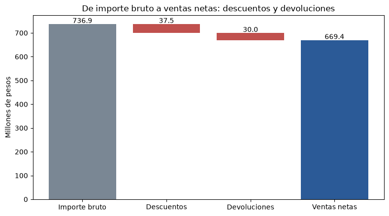
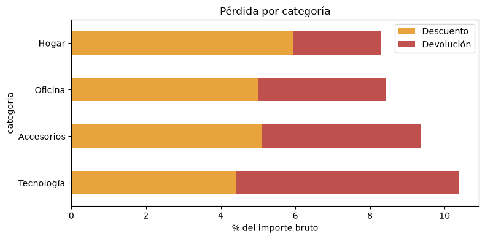
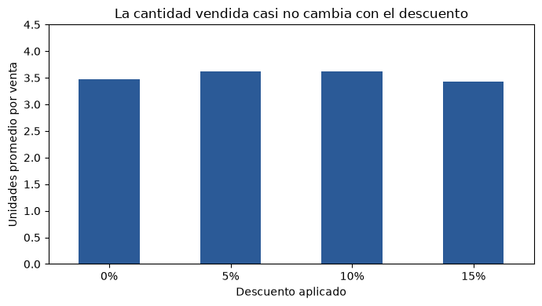
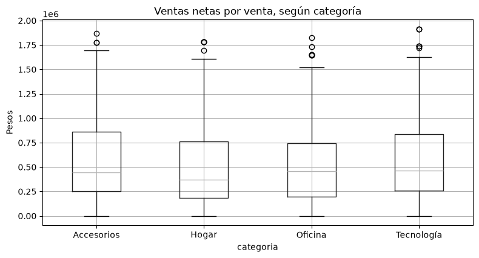
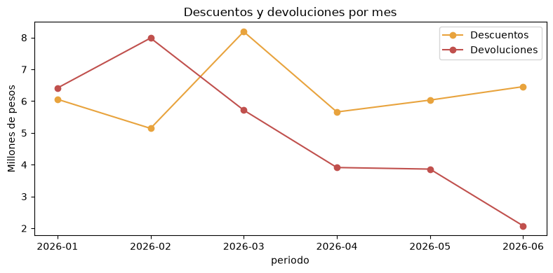

Análisis exploratorio en Python sobre la base del equipo. Explicamos qué se hizo, cómo se comprobó y qué se encontró.
Juan Felipe Rodríguez Galindo · Carlos Stiven Mora Hoyos
Ing. Nancy Gélvez Garcia PhD.
¿Qué está reduciendo los ingresos netos: los descuentos, las devoluciones o la composición de las ventas?
Usamos la misma base SQLite de los laboratorios 1 y 2: las tablas depuradas y el modelo estrella.
| Tabla | Filas |
|---|---|
ventas | 1.193 |
devoluciones | 70 (174 unidades) |
clientes | 120 |
productos | 40 |
FactVentas (lab 2) | 1.193 |
La referencia de la clase tiene 1.192 ventas. Nosotros conservamos V00410 imputando su precio de lista (regla R6 de la bitácora del lab 1).
Leer las tablas del lab 1 desde SQLite con pd.read_sql y revisar los tipos de columna.
Sumar devoluciones por venta y luego merge con clientes y productos (how='left').
Importe bruto → descuento → importe neto → valor devuelto → ventas netas.
describe, pérdida total, groupby por categoría, canal y región, correlación y atípicos (IQR).
Cinco gráficas, cada una con la frase de lo que muestra, y hallazgos con fuente.
Regla aplicada en todo el análisis: los porcentajes se calculan dividiendo totales, nunca promediando porcentajes.
Después de los tres merge siguen siendo 1.193 filas, porque las devoluciones se agregaron por venta antes de unir.
cantidad y precio_unitario quedaron como int64 y descuento como float64 (0,05 y no 5).
Frente a la referencia, el bruto y las netas suben solo $579.200 (V00410: 2 × $289.600). Los porcentajes coinciden al decimal.
El cuaderno corre de principio a fin sin errores (Restart Kernel and Run All) y genera las cinco gráficas.


| % del bruto | Descuento | Devolución | Pérdida |
|---|---|---|---|
| Tecnología | 4,4 | 6,0 | 10,4 |
| Accesorios | 5,1 | 4,2 | 9,3 |
| Oficina | 5,0 | 3,4 | 8,4 |
| Hogar | 6,0 | 2,3 | 8,3 |
Por canal, Tienda pierde más (10,3 %) por devoluciones (5,1 %). Por región, Cali pierde más (10,0 %) y Bucaramanga menos (7,8 %).

| Descuento | Ventas | Unid. prom. |
|---|---|---|
| 0 % | 586 | 3,47 |
| 5 % | 191 | 3,62 |
| 10 % | 198 | 3,62 |
| 15 % | 218 | 3,43 |

20 ventas atípicas (sobre $1,68 M): todas de 6 unidades de los productos más caros (P035 a P040). Son ventas reales, así que no se eliminan.

Las devoluciones caen del 7,0 % del bruto en febrero al 1,6 % en junio, en parte porque las ventas recientes aún no han tenido tiempo de devolverse.
Palanca 1 · Descuentos
No aumentan las unidades vendidas. Vale la pena revisar a quién y cuándo se dan.
Palanca 2 · Devoluciones
Se concentran en Tecnología (6,0 %) y en el canal Tienda (5,1 %).
Gracias · ¿Preguntas?